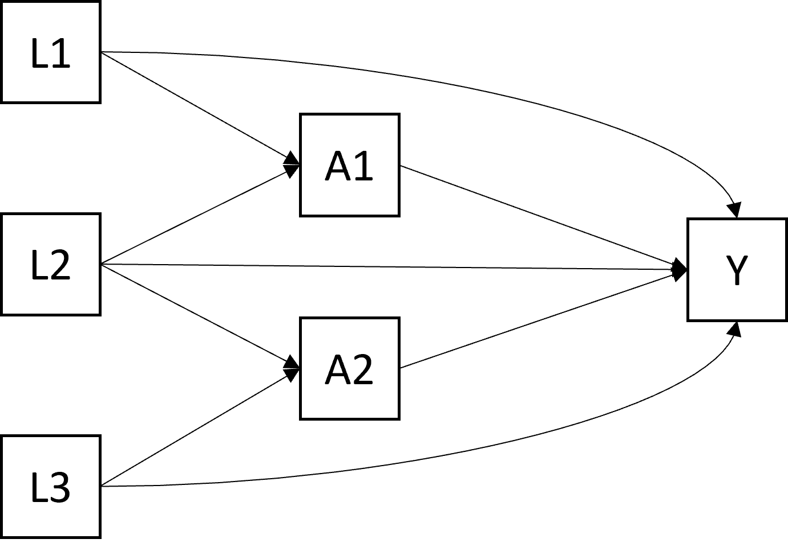

Chapter 7 Estimations
7.1 Simulations
On simule des données selon le DAG suivant (toutes les variables sont binaires):

rm(list=ls())
param.causal.model <- function(p_L1 = 0.50,
p_L2 = 0.20,
p_L3 = 0.70, # baseline confounders
b_A1 = 0.10,
b_L1_A1 = 0.15,
b_L2_A1 = 0.25, # modèle de A1
b_A2 = 0.15,
b_L1_A2 = 0.20,
b_L3_A2 = 0.20, # modèle de A2
b_Y = 0.10, # modèle de Y
b_L1_Y = 0.02,
b_L2_Y = 0.02,
b_L3_Y = -0.02,
b_A1_Y = 0.3,
b_A2_Y = 0.1,
b_A1A2_Y = 0.4 ) { # <- effet d'interaction Delta)
# coefficients pour simuler l'exposition
# exposition A1 # vérif
try(if(b_A1 + b_L1_A1 + b_L1_A1 > 1)
stop("la somme des coefficient du modèle A1 dépasse 100%"))
# exposition A2 # vérif
try(if(b_A2 + b_L1_A2 + b_L3_A2 > 1)
stop("la somme des coefficients du modèle A2 dépasse 100%"))
# coefficients pour simuler l'outcome, vérif
try(if(b_Y + b_L1_Y + b_L2_Y + b_L3_Y + b_A1_Y + b_A2_Y + b_A1A2_Y > 1)
stop("la somme des coefficients du modèle Y dépasse 100%"))
try(if(b_Y + b_L1_Y + b_L2_Y + b_L3_Y + b_A1_Y + b_A2_Y + b_A1A2_Y < 0)
stop("la somme des coefficients du modèle Y est inférieure à 0%"))
coef <- list(c(p_L1 = p_L1, p_L2 = p_L2, p_L3 = p_L3),
c(b_A1 = b_A1, b_L1_A1 = b_L1_A1, b_L2_A1 = b_L2_A1),
c(b_A2 = b_A2, b_L1_A2 = b_L1_A2, b_L3_A2 = b_L3_A2),
c(b_Y = b_Y, b_L1_Y = b_L1_Y, b_L2_Y = b_L2_Y, b_L3_Y = b_L3_Y,
b_A1_Y = b_A1_Y, b_A2_Y = b_A2_Y, b_A1A2_Y = b_A1A2_Y))
return(coef)
}
generate.data <- function(N, b = param.causal.model()) {
L1 <- rbinom(N, size = 1, prob = b[[1]]["p_L1"])
L2 <- rbinom(N, size = 1, prob = b[[1]]["p_L2"])
L3 <- rbinom(N, size = 1, prob = b[[1]]["p_L3"])
A1 <- rbinom(N, size = 1, prob = b[[2]]["b_A1"] +
(b[[2]]["b_L1_A1"] * L1) + (b[[2]]["b_L2_A1"] * L2))
A2 <- rbinom(N, size = 1, prob = b[[3]]["b_A2"] +
(b[[3]]["b_L1_A2"] * L1) + (b[[3]]["b_L3_A2"] * L3))
Y <- rbinom(N, size = 1, prob = (b[[4]]["b_Y"] +
(b[[4]]["b_L1_Y"] * L1) +
(b[[4]]["b_L2_Y"] * L2) +
(b[[4]]["b_L3_Y"] * L3) +
(b[[4]]["b_A1_Y"] * A1) +
(b[[4]]["b_A2_Y"] * A2) +
(b[[4]]["b_A1A2_Y"] * A1 * A2)) )
data.sim <- data.frame(L1, L2, L3, A1, A2, Y)
return(data.sim)
}
#### On simule une base de données
set.seed(12345)
# b = param.causal.model(b_A1A2_Y = -0.45)
b = param.causal.model()
df <- generate.data(N = 10000, b = b)
summary(df)
prop.table(table(df$Y, df$A1, df$A2, deparse.level = 2))| A2 | label | levels | value |
|---|---|---|---|
| 0 | A1 | 0 | 0.10 (0.30) |
| 0 | 1 | 0.41 (0.49) | |
| 1 | A1 | 0 | 0.20 (0.40) |
| 1 | 1 | 0.90 (0.30) |
7.2 Estimation par régression
7.3 Estimation par G-computation
Il s’agit d’une “G-methods” aussi appelée “standardisation” par Hernàn.
## 1.a) on crée 4 tables correspondant aux 4 interventions contrefactuelles
df.A1_0.A2_0 <- df.A1_1.A2_0 <- df.A1_0.A2_1 <- df.A1_1.A2_1 <- df
df.A1_0.A2_0$A1 <- df.A1_0.A2_0$A2 <- rep(0, nrow(df))
df.A1_1.A2_0$A1 <- rep(1, nrow(df))
df.A1_1.A2_0$A2 <- rep(0, nrow(df))
df.A1_0.A2_1$A1 <- rep(0, nrow(df))
df.A1_0.A2_1$A2 <- rep(1, nrow(df))
df.A1_1.A2_1$A1 <- df.A1_1.A2_1$A2 <- rep(1, nrow(df))
## 1.b) on modélise le critère de jugement
# model.Y <- glm(Y ~ L1 + L2 + L3 + A1 + A2 + A1:A2, data = df, family = "binomial")
# modèle logistique biaisé (il y a des interactions avec les baseline)
model.Y <- glm(Y ~ L1 + L2 + L3 + A1 + A2 + A1:A2, data = df,
family = "gaussian") # modèle non biaisé
# en pratique la régression logistique n'est pas tellement biaisée,
# mais peut être car il n'y a pas la place de mettre beaucoup de confusion
# par rapport aux effets importants de A1 et A2 ? (10 fois plus grands)
## 1.c) on prédit le critère de jugement sous les interventions contrefactuelles
Y.A1_0.A2_0 <- predict(model.Y, newdata = df.A1_0.A2_0, type = "response")
Y.A1_1.A2_0 <- predict(model.Y, newdata = df.A1_1.A2_0, type = "response")
Y.A1_0.A2_1 <- predict(model.Y, newdata = df.A1_0.A2_1, type = "response")
Y.A1_1.A2_1 <- predict(model.Y, newdata = df.A1_1.A2_1, type = "response")
## 1.d) on va enregistrer l'ensemble des résultats pertinents dans une table de longueur k1 x k2
int.r <- matrix(NA,
ncol = 26,
nrow = nlevels(as.factor(df$A1)) * nlevels(as.factor(df$A2)))
int.r <- as.data.frame(int.r)
names(int.r) <- c("A1","A2","p","p.lo","p.up",
"RD.A1","RD.A1.lo","RD.A1.up","RD.A2","RD.A2.lo","RD.A2.up",
"RR.A1","RR.A1.lo","RR.A1.up","RR.A2","RR.A2.lo","RR.A2.up",
"a.INT", "a.INT.lo", "a.INT.up","RERI","RERI.lo","RERI.up",
"m.INT", "m.INT.lo", "m.INT.up" )
int.r[,c("A1","A2")] <- expand.grid(c(0,1), c(0,1))
# marginal effects in the k1 x k2 table
# A1 = 0 et A2 = 0
int.r$p[int.r$A1 == 0 & int.r$A2 == 0] <- mean(Y.A1_0.A2_0)
# A1 = 1 et A2 = 0
int.r$p[int.r$A1 == 1 & int.r$A2 == 0] <- mean(Y.A1_1.A2_0)
# A1 = 0 et A2 = 1
int.r$p[int.r$A1 == 0 & int.r$A2 == 1] <- mean(Y.A1_0.A2_1)
# A1 = 1 et A2 = 1
int.r$p[int.r$A1 == 1 & int.r$A2 == 1] <- mean(Y.A1_1.A2_1)
# risk difference
# RD.A1.A2is0
int.r$RD.A1[int.r$A1 == 1 & int.r$A2 == 0] <- mean(Y.A1_1.A2_0) - mean(Y.A1_0.A2_0)
# RD.A1.A2is1
int.r$RD.A1[int.r$A1 == 1 & int.r$A2 == 1] <- mean(Y.A1_1.A2_1) - mean(Y.A1_0.A2_1)
# RD.A2.A1is0
int.r$RD.A2[int.r$A1 == 0 & int.r$A2 == 1] <- mean(Y.A1_0.A2_1) - mean(Y.A1_0.A2_0)
# RD.A2.A1is1
int.r$RD.A2[int.r$A1 == 1 & int.r$A2 == 1] <- mean(Y.A1_1.A2_1) - mean(Y.A1_1.A2_0)
# relative risk
# RR.A1.A2is0
int.r$RR.A1[int.r$A1 == 1 & int.r$A2 == 0] <- mean(Y.A1_1.A2_0) / mean(Y.A1_0.A2_0)
# RR.A1.A2is1
int.r$RR.A1[int.r$A1 == 1 & int.r$A2 == 1] <- mean(Y.A1_1.A2_1) / mean(Y.A1_0.A2_1)
# RR.A2.A1is0
int.r$RR.A2[int.r$A1 == 0 & int.r$A2 == 1] <- mean(Y.A1_0.A2_1) / mean(Y.A1_0.A2_0)
# RR.A2.A1is1
int.r$RR.A2[int.r$A1 == 1 & int.r$A2 == 1] <- mean(Y.A1_1.A2_1) / mean(Y.A1_1.A2_0)
# additive interaction
int.r$a.INT[int.r$A1 == 1 & int.r$A2 == 1] <- mean(Y.A1_1.A2_1) -
mean(Y.A1_1.A2_0) -
mean(Y.A1_0.A2_1) +
mean(Y.A1_0.A2_0)
# RERI
int.r$RERI[int.r$A1 == 1 & int.r$A2 == 1] <- (mean(Y.A1_1.A2_1) -
mean(Y.A1_1.A2_0) -
mean(Y.A1_0.A2_1) +
mean(Y.A1_0.A2_0)) /
mean(Y.A1_0.A2_0)
# multiplicative interaction
int.r$m.INT[int.r$A1 == 1 & int.r$A2 == 1] <- (mean(Y.A1_1.A2_1) *
mean(Y.A1_0.A2_0)) /
(mean(Y.A1_1.A2_0) *
mean(Y.A1_0.A2_1))
## 1.e) Intervalles de confiance par bootstrap
set.seed(5678)
B <- 2000
bootstrap.est <- data.frame(matrix(NA, nrow = B, ncol = 15))
colnames(bootstrap.est) <- c("p.A1is0.A2is0", "p.A1is1.A2is0", "p.A1is0.A2is1", "p.A1is1.A2is1",
"RD.A1.A2is0", "RD.A1.A2is1", "RD.A2.A1is0", "RD.A2.A1is1",
"lnRR.A1.A2is0", "lnRR.A1.A2is1", "lnRR.A2.A1is0", "lnRR.A2.A1is1",
"INT.a", "lnRERI", "lnINT.m")
for (b in 1:B){
# sample the indices 1 to n with replacement
bootIndices <- sample(1:nrow(df), replace=T)
bootData <- df[bootIndices,]
if ( round(b/100, 0) == b/100 ) print(paste0("bootstrap number ",b))
# model (unbiased in this case)
model.Y <- glm(Y ~ L1 + L2 + L3 + A1 + A2 + A1:A2,
data = bootData, # use BootData here +++
family = "gaussian")
# conterfactual data sets
boot.A1_0.A2_0 <- boot.A1_1.A2_0 <- boot.A1_0.A2_1 <- boot.A1_1.A2_1 <- bootData
boot.A1_0.A2_0$A1 <- boot.A1_0.A2_0$A2 <- rep(0, nrow(df))
boot.A1_1.A2_0$A1 <- rep(1, nrow(df))
boot.A1_1.A2_0$A2 <- rep(0, nrow(df))
boot.A1_0.A2_1$A1 <- rep(0, nrow(df))
boot.A1_0.A2_1$A2 <- rep(1, nrow(df))
boot.A1_1.A2_1$A1 <- boot.A1_1.A2_1$A2 <- rep(1, nrow(df))
# predict potential outcomes under counterfactual scenarios
Y.A1_0.A2_0 <- predict(model.Y, newdata = boot.A1_0.A2_0, type = "response")
Y.A1_1.A2_0 <- predict(model.Y, newdata = boot.A1_1.A2_0, type = "response")
Y.A1_0.A2_1 <- predict(model.Y, newdata = boot.A1_0.A2_1, type = "response")
Y.A1_1.A2_1 <- predict(model.Y, newdata = boot.A1_1.A2_1, type = "response")
# save results in the bootstrap table
bootstrap.est[b,"p.A1is0.A2is0"] <- mean(Y.A1_0.A2_0)
bootstrap.est[b,"p.A1is1.A2is0"] <- mean(Y.A1_1.A2_0)
bootstrap.est[b,"p.A1is0.A2is1"] <- mean(Y.A1_0.A2_1)
bootstrap.est[b,"p.A1is1.A2is1"] <- mean(Y.A1_1.A2_1)
bootstrap.est[b,"RD.A1.A2is0"] <- mean(Y.A1_1.A2_0) - mean(Y.A1_0.A2_0)
bootstrap.est[b,"RD.A1.A2is1"] <- mean(Y.A1_1.A2_1) - mean(Y.A1_0.A2_1)
bootstrap.est[b,"RD.A2.A1is0"] <- mean(Y.A1_0.A2_1) - mean(Y.A1_0.A2_0)
bootstrap.est[b,"RD.A2.A1is1"] <- mean(Y.A1_1.A2_1) - mean(Y.A1_1.A2_0)
bootstrap.est[b,"lnRR.A1.A2is0"] <- log(mean(Y.A1_1.A2_0) / mean(Y.A1_0.A2_0))
bootstrap.est[b,"lnRR.A1.A2is1"] <- log(mean(Y.A1_1.A2_1) / mean(Y.A1_0.A2_1))
bootstrap.est[b,"lnRR.A2.A1is0"] <- log(mean(Y.A1_0.A2_1) / mean(Y.A1_0.A2_0))
bootstrap.est[b,"lnRR.A2.A1is1"] <- log(mean(Y.A1_1.A2_1) / mean(Y.A1_1.A2_0))
bootstrap.est[b,"INT.a"] <- mean(Y.A1_1.A2_1) -
mean(Y.A1_1.A2_0) - mean(Y.A1_0.A2_1) + mean(Y.A1_0.A2_0)
bootstrap.est[b,"lnRERI"] <- log((mean(Y.A1_1.A2_1) -
mean(Y.A1_1.A2_0) - mean(Y.A1_0.A2_1) + mean(Y.A1_0.A2_0)) / mean(Y.A1_0.A2_0))
bootstrap.est[b,"lnINT.m"] <- log( (mean(Y.A1_1.A2_1) *
mean(Y.A1_0.A2_0)) / (mean(Y.A1_1.A2_0) * mean(Y.A1_0.A2_1)))
}
# head(bootstrap.est)
# summary(bootstrap.est)
# par(mfrow = c(4,4))
# for(c in 1:ncol(bootstrap.est)) {
# hist(bootstrap.est[,c], freq = FALSE, main = names(bootstrap.est)[c])
# lines(density(bootstrap.est[,c]), col = 2, lwd = 3)
# curve(1/sqrt(var(bootstrap.est[,c]) * 2 * pi) *
# exp(-1/2 * ((x-mean(bootstrap.est[,c])) / sd(bootstrap.est[,c]))^2),
# col = 1, lwd = 2, lty = 2, add = TRUE)
# par(mfrow = c(1,1))
# ok, on a des belles lois normales dans les distributions bootstrap, tout va bien !
# pour les IC95%, je peux utiliser la déviation standard des distributions
# pour des distributions plus asymétriques, on utiliserait plutôt les percentiles 2.5% et 97.5%
# }
# marginal effects in the k1 x k2 table
# A1 = 0 et A2 = 0
int.r$p.lo[int.r$A1 == 0 & int.r$A2 == 0] <- int.r$p[int.r$A1 == 0 & int.r$A2 == 0] -
qnorm(0.975) * sd(bootstrap.est$p.A1is0.A2is0)
int.r$p.up[int.r$A1 == 0 & int.r$A2 == 0] <- int.r$p[int.r$A1 == 0 & int.r$A2 == 0] +
qnorm(0.975) * sd(bootstrap.est$p.A1is0.A2is0)
# A1 = 1 et A2 = 0
int.r$p.lo[int.r$A1 == 1 & int.r$A2 == 0] <- int.r$p[int.r$A1 == 1 & int.r$A2 == 0] -
qnorm(0.975) * sd(bootstrap.est$p.A1is1.A2is0)
int.r$p.up[int.r$A1 == 1 & int.r$A2 == 0] <- int.r$p[int.r$A1 == 1 & int.r$A2 == 0] +
qnorm(0.975) * sd(bootstrap.est$p.A1is1.A2is0)
# A1 = 0 et A2 = 1
int.r$p.lo[int.r$A1 == 0 & int.r$A2 == 1] <- int.r$p[int.r$A1 == 0 & int.r$A2 == 1] -
qnorm(0.975) * sd(bootstrap.est$p.A1is0.A2is1)
int.r$p.up[int.r$A1 == 0 & int.r$A2 == 1] <- int.r$p[int.r$A1 == 0 & int.r$A2 == 1] +
qnorm(0.975) * sd(bootstrap.est$p.A1is0.A2is1)
# A1 = 1 et A2 = 1
int.r$p.lo[int.r$A1 == 1 & int.r$A2 == 1] <- int.r$p[int.r$A1 == 1 & int.r$A2 == 1] -
qnorm(0.975) * sd(bootstrap.est$p.A1is1.A2is1)
int.r$p.up[int.r$A1 == 1 & int.r$A2 == 1] <- int.r$p[int.r$A1 == 1 & int.r$A2 == 1] +
qnorm(0.975) * sd(bootstrap.est$p.A1is1.A2is1)
# risk difference
# RD.A1.A2is0
int.r$RD.A1.lo[int.r$A1 == 1 & int.r$A2 == 0] <- int.r$RD.A1[int.r$A1 == 1 & int.r$A2 == 0] -
qnorm(0.975) * sd(bootstrap.est$RD.A1.A2is0)
int.r$RD.A1.up[int.r$A1 == 1 & int.r$A2 == 0] <- int.r$RD.A1[int.r$A1 == 1 & int.r$A2 == 0] +
qnorm(0.975) * sd(bootstrap.est$RD.A1.A2is0)
# RD.A1.A2is1
int.r$RD.A1.lo[int.r$A1 == 1 & int.r$A2 == 1] <- int.r$RD.A1[int.r$A1 == 1 & int.r$A2 == 1] -
qnorm(0.975) * sd(bootstrap.est$RD.A1.A2is1)
int.r$RD.A1.up[int.r$A1 == 1 & int.r$A2 == 1] <- int.r$RD.A1[int.r$A1 == 1 & int.r$A2 == 1] +
qnorm(0.975) * sd(bootstrap.est$RD.A1.A2is1)
# RD.A2.A1is0
int.r$RD.A2.lo[int.r$A1 == 0 & int.r$A2 == 1] <- int.r$RD.A2[int.r$A1 == 0 & int.r$A2 == 1] -
qnorm(0.975) * sd(bootstrap.est$RD.A2.A1is0)
int.r$RD.A2.up[int.r$A1 == 0 & int.r$A2 == 1] <- int.r$RD.A2[int.r$A1 == 0 & int.r$A2 == 1] +
qnorm(0.975) * sd(bootstrap.est$RD.A2.A1is0)
# RD.A2.A1is1
int.r$RD.A2.lo[int.r$A1 == 1 & int.r$A2 == 1] <- int.r$RD.A2[int.r$A1 == 1 & int.r$A2 == 1] -
qnorm(0.975) * sd(bootstrap.est$RD.A2.A1is1)
int.r$RD.A2.up[int.r$A1 == 1 & int.r$A2 == 1] <- int.r$RD.A2[int.r$A1 == 1 & int.r$A2 == 1] +
qnorm(0.975) * sd(bootstrap.est$RD.A2.A1is1)
# relative risk
# RR.A1.A2is0
int.r$RR.A1.lo[int.r$A1 == 1 & int.r$A2 == 0] <- exp(log(int.r$RR.A1[int.r$A1 == 1 & int.r$A2 == 0]) -
qnorm(0.975) * sd(bootstrap.est$lnRR.A1.A2is0))
int.r$RR.A1.up[int.r$A1 == 1 & int.r$A2 == 0] <- exp(log(int.r$RR.A1[int.r$A1 == 1 & int.r$A2 == 0]) +
qnorm(0.975) * sd(bootstrap.est$lnRR.A1.A2is0))
# RR.A1.A2is1
int.r$RR.A1.lo[int.r$A1 == 1 & int.r$A2 == 1] <- exp(log(int.r$RR.A1[int.r$A1 == 1 & int.r$A2 == 1]) -
qnorm(0.975) * sd(bootstrap.est$lnRR.A1.A2is1))
int.r$RR.A1.up[int.r$A1 == 1 & int.r$A2 == 1] <- exp(log(int.r$RR.A1[int.r$A1 == 1 & int.r$A2 == 1]) +
qnorm(0.975) * sd(bootstrap.est$lnRR.A1.A2is1))
# RR.A2.A1is0
int.r$RR.A2.lo[int.r$A1 == 0 & int.r$A2 == 1] <- exp(log(int.r$RR.A2[int.r$A1 == 0 & int.r$A2 == 1]) -
qnorm(0.975) * sd(bootstrap.est$lnRR.A2.A1is0))
int.r$RR.A2.up[int.r$A1 == 0 & int.r$A2 == 1] <- exp(log(int.r$RR.A2[int.r$A1 == 0 & int.r$A2 == 1]) +
qnorm(0.975) * sd(bootstrap.est$lnRR.A2.A1is0))
# RR.A2.A1is1
int.r$RR.A2.lo[int.r$A1 == 1 & int.r$A2 == 1] <- exp(log(int.r$RR.A2[int.r$A1 == 1 & int.r$A2 == 1]) -
qnorm(0.975) * sd(bootstrap.est$lnRR.A2.A1is1))
int.r$RR.A2.up[int.r$A1 == 1 & int.r$A2 == 1] <- exp(log(int.r$RR.A2[int.r$A1 == 1 & int.r$A2 == 1]) +
qnorm(0.975) * sd(bootstrap.est$lnRR.A2.A1is1))
# additive interaction
int.r$a.INT.lo[int.r$A1 == 1 & int.r$A2 == 1] <- int.r$a.INT[int.r$A1 == 1 & int.r$A2 == 1] -
qnorm(0.975) * sd(bootstrap.est$INT.a)
int.r$a.INT.up[int.r$A1 == 1 & int.r$A2 == 1] <- int.r$a.INT[int.r$A1 == 1 & int.r$A2 == 1] +
qnorm(0.975) * sd(bootstrap.est$INT.a)
# RERI
int.r$RERI.lo[int.r$A1 == 1 & int.r$A2 == 1] <- exp(log(int.r$RERI[int.r$A1 == 1 & int.r$A2 == 1]) -
qnorm(0.975) * sd(bootstrap.est$lnRERI))
int.r$RERI.up[int.r$A1 == 1 & int.r$A2 == 1] <- exp(log(int.r$RERI[int.r$A1 == 1 & int.r$A2 == 1]) +
qnorm(0.975) * sd(bootstrap.est$lnRERI))
# multiplicative interaction
int.r$m.INT.lo[int.r$A1 == 1 & int.r$A2 == 1] <- exp(log(int.r$m.INT[int.r$A1 == 1 & int.r$A2 == 1]) -
qnorm(0.975) * sd(bootstrap.est$lnINT.m))
int.r$m.INT.up[int.r$A1 == 1 & int.r$A2 == 1] <- exp(log(int.r$m.INT[int.r$A1 == 1 & int.r$A2 == 1]) +
qnorm(0.975) * sd(bootstrap.est$lnINT.m))Au final, on a :
| A2=0 | A2=1 | RD.A2|A1 | RR.A2|A1 | |
|---|---|---|---|---|
| A1=0 | \(p_{00}\)=0.104 [0.095,0.113] | \(p_{01}\)=0.197 [0.183,0.211] | 0.092 [0.076,0.109] | 1.89 [1.68,2.11] |
| A1=1 | \(p_{10}\)=0.405 [0.379,0.431] | \(p_{11}\)=0.891 [0.87,0.912] | 0.486 [0.453,0.519] | 2.2 [2.06,2.36] |
| RD.A1|A2 | 0.301 [0.273,0.329] | 0.695 [0.67,0.72] | ||
| RR.A1|A2 | 3.89 [3.48,4.34] | 4.54 [4.21,4.89] | ||
| Note: | ||||
| additive Interaction = 0.394 [0.358;0.43] | ||||
| RERI = 3.78 [3.38;4.23] | ||||
| multiplicative Interaction = 1.17 [1.02;1.33] |
7.4 Estimation par Modèle Structurel Marginal
# On récupère les Y prédit précédents, que l'on fusionne
Y <- c(Y.A1_0.A2_0, Y.A1_1.A2_0, Y.A1_0.A2_1, Y.A1_1.A2_1)
length(Y)
# on aura une base de données de 40000 lignes
# On récupère les valeurs d'exposition qui ont servi dans les scénarios contrefactuels
# (garder le même ordre que pour les Y.A1.A2)
X <- rbind(subset(df.A1_0.A2_0, select = c("A1", "A2")),
subset(df.A1_1.A2_0, select = c("A1", "A2")),
subset(df.A1_0.A2_1, select = c("A1", "A2")),
subset(df.A1_1.A2_1, select = c("A1", "A2")))
# dim(X)
## Modèle structurel marginal
msm.RD <- glm(Y ~ A1 + A2 + A1:A2,
data = data.frame(Y,X),
family = "gaussian") # ne pas ajuster sur les facteurs de confusion
msm.RD
## tableau des effets marignaux
results.MSM <- matrix(NA, ncol = 4, nrow = 4)
colnames(results.MSM) <- c("A2 = 0", "A2 = 1",
"RD within strata of A1",
"RR within strata of A1")
rownames(results.MSM) <- c("A1 = 0", "A1 = 1",
"RD within strata of A2",
"RR within strata of A2")
# 4 risques marginaux
results.MSM["A1 = 0","A2 = 0"] <- msm.RD$coefficients["(Intercept)"]
results.MSM["A1 = 0","A2 = 1"] <- msm.RD$coefficients["(Intercept)"] +
msm.RD$coefficients["A2"]
results.MSM["A1 = 1","A2 = 0"] <- msm.RD$coefficients["(Intercept)"] +
msm.RD$coefficients["A1"]
results.MSM["A1 = 1","A2 = 1"] <- msm.RD$coefficients["(Intercept)"] +
msm.RD$coefficients["A2"] + msm.RD$coefficients["A1"] + msm.RD$coefficients["A1:A2"]
# within strata of A2
results.MSM["RR within strata of A2", "A2 = 0"] <- results.MSM["A1 = 1","A2 = 0"] /
results.MSM["A1 = 0","A2 = 0"]
results.MSM["RD within strata of A2", "A2 = 0"] <- results.MSM["A1 = 1","A2 = 0"] -
results.MSM["A1 = 0","A2 = 0"]
results.MSM["RR within strata of A2", "A2 = 1"] <- results.MSM["A1 = 1","A2 = 1"] /
results.MSM["A1 = 0","A2 = 1"]
results.MSM["RD within strata of A2", "A2 = 1"] <- results.MSM["A1 = 1","A2 = 1"] -
results.MSM["A1 = 0","A2 = 1"]
# within strata of A1
results.MSM["A1 = 0", "RR within strata of A1"] <- results.MSM["A1 = 0","A2 = 1"] /
results.MSM["A1 = 0","A2 = 0"]
results.MSM["A1 = 0", "RD within strata of A1"] <- results.MSM["A1 = 0","A2 = 1"] -
results.MSM["A1 = 0","A2 = 0"]
results.MSM["A1 = 1", "RR within strata of A1"] <- results.MSM["A1 = 1","A2 = 1"] /
results.MSM["A1 = 1","A2 = 0"]
results.MSM["A1 = 1", "RD within strata of A1"] <- results.MSM["A1 = 1","A2 = 1"] -
results.MSM["A1 = 1","A2 = 0"]
results.MSM <- round(results.MSM,3)
RD.interaction <- msm.RD$coefficients["A1:A2"]
RR.interaction <- (results.MSM["A1 = 1","A2 = 1"] *
results.MSM["A1 = 0","A2 = 0"]) /
( results.MSM["A1 = 0","A2 = 1"] *
results.MSM["A1 = 1","A2 = 0"] )Au final, on a (sans les IC):
| A2 = 0 | A2 = 1 | RD within strata of A1 | RR within strata of A1 | |
|---|---|---|---|---|
| A1 = 0 | 0.099 | 0.198 | 0.099 | 2.008 |
| A1 = 1 | 0.409 | 0.904 | 0.494 | 2.208 |
| RD within strata of A2 | 0.311 | 0.705 | NA | NA |
| RR within strata of A2 | 4.146 | 4.560 | NA | NA |
| Note: | ||||
| additive Interaction = 0.395 | ||||
| multiplicative Interaction = 1.11 |
7.5 Estimation avec TMLE
## 3- int.ltmleMSM() pour estimer les différentes quantités d'intérêt,
### par gcomputation, IPTW ou tmle
int.ltmleMSM <- function(data = data,
Q_formulas = Q_formulas,
g_formulas = g_formulas,
Anodes = Anodes,
Lnodes = Lnodes,
Ynodes = Ynodes,
final.Ynodes = final.Ynodes,
SL.library = list(Q="SL.glm",
g="SL.glm"),
gcomp = gcomp,
iptw.only = iptw.only,
survivalOutcome = FALSE,
variance.method = "ic",
B = 2000,
boot.seed = 12345) {
# regime=
# binary array: n x numAnodes x numRegimes of counterfactual treatment or a list of 'rule' functions
regimes.MSM <- array(NA, dim = c(nrow(data), 2, 4)) # 2 variables d'exposition (A1, A2), 4 régimes d'exposition (0,0) (1,0) (0,1) (1,1)
regimes.MSM[,,1] <- matrix(c(0,0), ncol = 2, nrow = nrow(data), byrow = TRUE) # exposé ni à A1, ni à A2
regimes.MSM[,,2] <- matrix(c(1,0), ncol = 2, nrow = nrow(data), byrow = TRUE) # exposé à A1 uniquement
regimes.MSM[,,3] <- matrix(c(0,1), ncol = 2, nrow = nrow(data), byrow = TRUE) # exposé à A2 uniquement
regimes.MSM[,,4] <- matrix(c(1,1), ncol = 2, nrow = nrow(data), byrow = TRUE) # exposé à A1 et à A2
# summary.measures = valeurs des coefficients du MSM associés à chaque régime
# array: num.regimes x num.summary.measures x num.final.Ynodes -
# measures summarizing the regimes that will be used on the right hand side of working.msm
# (baseline covariates may also be used in the right hand side of working.msm and do not need to be included in summary.measures)
summary.measures.reg <- array(NA, dim = c(4, 3, 1))
summary.measures.reg[,,1] <- matrix(c(0, 0, 0, # aucun effet ni de A1, ni de A2
1, 0, 0, # effet de A1 isolé
0, 1, 0, # effet de A2 isolé
1, 1, 1), # effet de A1 + A2 + A1:A2
ncol = 3, nrow = 4, byrow = TRUE)
colnames(summary.measures.reg) <- c("A1", "A2", "A1:A2")
if(gcomp == TRUE) {
# test length SL.library$Q
SL.library$Q <- ifelse(length(SL.library$Q) > 1, "SL.glm", SL.library$Q)
# simplify SL.library$g because g functions are useless with g-computation
SL.library$g <- "SL.mean"
iptw.only <- FALSE
}
ltmle_MSM <- ltmleMSM(data = data,
Anodes = Anodes,
Lnodes = Lnodes,
Ynodes = Ynodes,
Qform = Q_formulas,
gform = g_formulas,
#deterministic.g.function = det.g,
regimes = regimes.MSM, # à la place de abar
working.msm= "Y ~ A1 + A2 + A1:A2",
summary.measures = summary.measures.reg,
final.Ynodes = final.Ynodes,
msm.weights = NULL,
SL.library = SL.library,
gcomp = gcomp,
iptw.only = iptw.only,
survivalOutcome = survivalOutcome,
estimate.time = FALSE,
variance.method = variance.method)
bootstrap.res <- data.frame("beta.Intercept" = rep(NA, B),
"beta.A1" = rep(NA, B),
"beta.A2" = rep(NA, B),
"beta.A1A2" = rep(NA, B))
if(gcomp == TRUE) {
set.seed <- boot.seed
for (b in 1:B){
# sample the indices 1 to n with replacement
bootIndices <- sample(1:nrow(data), replace=T)
bootData <- data[bootIndices,]
if ( round(b/100, 0) == b/100 ) print(paste0("bootstrap number ",b))
boot_ltmle_MSM <- ltmleMSM(data = bootData,
Anodes = Anodes,
Lnodes = Lnodes,
Ynodes = Ynodes,
Qform = Q_formulas,
gform = g_formulas,
#deterministic.g.function = det.g,
regimes = regimes.MSM, # à la place de abar
working.msm= "Y ~ A1 + A2 + A1:A2",
summary.measures = summary.measures.reg,
final.Ynodes = final.Ynodes,
msm.weights = NULL,
SL.library = SL.library,
gcomp = gcomp,
iptw.only = iptw.only,
survivalOutcome = survivalOutcome,
estimate.time = FALSE,
variance.method = variance.method)
bootstrap.res$beta.Intercept[b] <- boot_ltmle_MSM$beta["(Intercept)"]
bootstrap.res$beta.A1[b] <- boot_ltmle_MSM$beta["A1"]
bootstrap.res$beta.A2[b] <- boot_ltmle_MSM$beta["A2"]
bootstrap.res$beta.A1A2[b] <- boot_ltmle_MSM$beta["A1:A2"]
}
}
return(list(ltmle_MSM = ltmle_MSM,
bootstrap.res = bootstrap.res))
}
### 4- summary.int() pour enregistrer l'ensemble des estimations
summary.int <- function(data = data,
ltmle_MSM = ltmle_MSM,
estimator = c("gcomp", "iptw", "tmle")) {
if(estimator == "gcomp") {
try(if(ltmle_MSM$ltmle_MSM$gcomp == FALSE)
stop("The ltmle function did not use the gcomp estimator, but the iptw +/- tmle estimator"))
beta <- ltmle_MSM$ltmle_MSM$beta
}
if(estimator == "iptw") {
try(if(ltmle_MSM$ltmle_MSM$gcomp == TRUE)
stop("The ltmle function used the gcomp estimator, iptw is not available"))
beta <- ltmle_MSM$ltmle_MSM$beta.iptw
IC <- ltmle_MSM$ltmle_MSM$IC.iptw
}
if(estimator == "tmle") {
try(if(ltmle_MSM$ltmle_MSM$gcomp == TRUE) stop("The ltmle function used the gcomp estimator, tmle is not available"))
beta <- ltmle_MSM$ltmle_MSM$beta
IC <- ltmle_MSM$ltmle_MSM$IC
}
# on va enregitrer l'ensemble des résultats pertinent dans une table de longueur k1 x k2
int.r <- matrix(NA,
ncol = 34,
nrow = nlevels(as.factor(data$A1)) * nlevels(as.factor(data$A2)))
int.r <- as.data.frame(int.r)
names(int.r) <- c("A1","A2","p","sd.p","p.lo","p.up",
"RD.A1","sd.RD.A1","RD.A1.lo","RD.A1.up",
"RD.A2","sd.RD.A2","RD.A2.lo","RD.A2.up",
"RR.A1","sd.lnRR.A1","RR.A1.lo","RR.A1.up",
"RR.A2","sd.lnRR.A2","RR.A2.lo","RR.A2.up",
"a.INT", "sd.a.INT", "a.INT.lo", "a.INT.up","RERI","sd.lnRERI","RERI.lo","RERI.up",
"m.INT", "sd.ln.m.INT", "m.INT.lo", "m.INT.up" )
int.r[,c("A1","A2")] <- expand.grid(c(0,1), c(0,1))
# on peut retrouver les IC95% par delta method
# A1 = 0 et A2 = 0
int.r$p[int.r$A1 == 0 & int.r$A2 == 0] <- plogis(beta["(Intercept)"])
# A1 = 1 et A2 = 0
int.r$p[int.r$A1 == 1 & int.r$A2 == 0] <- plogis(beta["(Intercept)"] +
beta["A1"])
# A1 = 0 et A2 = 1
int.r$p[int.r$A1 == 0 & int.r$A2 == 1] <- plogis(beta["(Intercept)"] +
beta["A2"])
# A1 = 1 et A2 = 1
int.r$p[int.r$A1 == 1 & int.r$A2 == 1] <- plogis(beta["(Intercept)"] +
beta["A1"] +
beta["A2"] +
beta["A1:A2"])
# RD.A1.A2is0
int.r$RD.A1[int.r$A1 == 1 & int.r$A2 == 0] <- int.r$p[int.r$A1 == 1 & int.r$A2 == 0] - int.r$p[int.r$A1 == 0 & int.r$A2 == 0]
# RD.A1.A2is1
int.r$RD.A1[int.r$A1 == 1 & int.r$A2 == 1] <- int.r$p[int.r$A1 == 1 & int.r$A2 == 1] - int.r$p[int.r$A1 == 0 & int.r$A2 == 1]
# RD.A2.A1is0
int.r$RD.A2[int.r$A1 == 0 & int.r$A2 == 1] <- int.r$p[int.r$A1 == 0 & int.r$A2 == 1] - int.r$p[int.r$A1 == 0 & int.r$A2 == 0]
# RD.A2.A1is1
int.r$RD.A2[int.r$A1 == 1 & int.r$A2 == 1] <- int.r$p[int.r$A1 == 1 & int.r$A2 == 1] - int.r$p[int.r$A1 == 1 & int.r$A2 == 0]
# RR.A1.A2is0
int.r$RR.A1[int.r$A1 == 1 & int.r$A2 == 0] <- exp(log(int.r$p[int.r$A1 == 1 & int.r$A2 == 0]) - log(int.r$p[int.r$A1 == 0 & int.r$A2 == 0]))
# RR.A1.A2is1
int.r$RR.A1[int.r$A1 == 1 & int.r$A2 == 1] <- exp(log(int.r$p[int.r$A1 == 1 & int.r$A2 == 1]) - log(int.r$p[int.r$A1 == 0 & int.r$A2 == 1]))
# RR.A2.A1is0
int.r$RR.A2[int.r$A1 == 0 & int.r$A2 == 1] <- exp(log(int.r$p[int.r$A1 == 0 & int.r$A2 == 1]) - log(int.r$p[int.r$A1 == 0 & int.r$A2 == 0]))
# RR.A2.A1is1
int.r$RR.A2[int.r$A1 == 1 & int.r$A2 == 1] <- exp(log(int.r$p[int.r$A1 == 1 & int.r$A2 == 1]) - log(int.r$p[int.r$A1 == 1 & int.r$A2 == 0]))
# additive interaction
int.r$a.INT[int.r$A1 == 1 & int.r$A2 == 1] <- int.r$p[int.r$A1 == 1 & int.r$A2 == 1] - int.r$p[int.r$A1 == 1 & int.r$A2 == 0] -
int.r$p[int.r$A1 == 0 & int.r$A2 == 1] + int.r$p[int.r$A1 == 0 & int.r$A2 == 0]
# RERI
int.r$RERI[int.r$A1 == 1 & int.r$A2 == 1] <- exp(log(int.r$p[int.r$A1 == 1 & int.r$A2 == 1] - int.r$p[int.r$A1 == 1 & int.r$A2 == 0] -
int.r$p[int.r$A1 == 0 & int.r$A2 == 1] + int.r$p[int.r$A1 == 0 & int.r$A2 == 0]) -
log(int.r$p[int.r$A1 == 0 & int.r$A2 == 0]))
# multiplicative interaction
int.r$m.INT[int.r$A1 == 1 & int.r$A2 == 1] <- exp(log(int.r$p[int.r$A1 == 1 & int.r$A2 == 1]) - log(int.r$p[int.r$A1 == 1 & int.r$A2 == 0]) -
log(int.r$p[int.r$A1 == 0 & int.r$A2 == 1]) + log(int.r$p[int.r$A1 == 0 & int.r$A2 == 0]))
## IC95%
if(estimator == "iptw" | estimator == "tmle") {
# A1 = 0 et A2 = 0
grad <- c(int.r$p[int.r$A1 == 0 & int.r$A2 == 0] * (1 - int.r$p[int.r$A1 == 0 & int.r$A2 == 0]),0,0,0)
v <- t(grad) %*% var(IC) %*% grad
int.r$sd.p[int.r$A1 == 0 & int.r$A2 == 0] <- sqrt(v / nrow(data))
int.r$p.lo[int.r$A1 == 0 & int.r$A2 == 0] <- int.r$p[int.r$A1 == 0 & int.r$A2 == 0] -
qnorm(0.975) * int.r$sd.p[int.r$A1 == 0 & int.r$A2 == 0]
int.r$p.up[int.r$A1 == 0 & int.r$A2 == 0] <- int.r$p[int.r$A1 == 0 & int.r$A2 == 0] +
qnorm(0.975) * int.r$sd.p[int.r$A1 == 0 & int.r$A2 == 0]
# A1 = 1 et A2 = 0
grad <- c(int.r$p[int.r$A1 == 1 & int.r$A2 == 0] * (1 - int.r$p[int.r$A1 == 1 & int.r$A2 == 0]),
int.r$p[int.r$A1 == 1 & int.r$A2 == 0] * (1 - int.r$p[int.r$A1 == 1 & int.r$A2 == 0]),0,0)
v <- t(grad) %*% var(IC) %*% grad
int.r$sd.p[int.r$A1 == 1 & int.r$A2 == 0] <- sqrt(v / nrow(data))
int.r$p.lo[int.r$A1 == 1 & int.r$A2 == 0] <- int.r$p[int.r$A1 == 1 & int.r$A2 == 0] -
qnorm(0.975) * int.r$sd.p[int.r$A1 == 1 & int.r$A2 == 0]
int.r$p.up[int.r$A1 == 1 & int.r$A2 == 0] <- int.r$p[int.r$A1 == 1 & int.r$A2 == 0] +
qnorm(0.975) * int.r$sd.p[int.r$A1 == 1 & int.r$A2 == 0]
# A1 = 0 et A2 = 1
grad <- c(int.r$p[int.r$A1 == 0 & int.r$A2 == 1] * (1 - int.r$p[int.r$A1 == 0 & int.r$A2 == 1]), 0,
int.r$p[int.r$A1 == 0 & int.r$A2 == 1] * (1 - int.r$p[int.r$A1 == 0 & int.r$A2 == 1]), 0)
v <- t(grad) %*% var(IC) %*% grad
int.r$sd.p[int.r$A1 == 0 & int.r$A2 == 1] <- sqrt(v / nrow(data))
int.r$p.lo[int.r$A1 == 0 & int.r$A2 == 1] <- int.r$p[int.r$A1 == 0 & int.r$A2 == 1] -
qnorm(0.975) * int.r$sd.p[int.r$A1 == 0 & int.r$A2 == 1]
int.r$p.up[int.r$A1 == 0 & int.r$A2 == 1] <- int.r$p[int.r$A1 == 0 & int.r$A2 == 1] +
qnorm(0.975) * int.r$sd.p[int.r$A1 == 0 & int.r$A2 == 1]
# A1 = 1 et A2 = 1
grad <- rep(int.r$p[int.r$A1 == 1 & int.r$A2 == 1] * (1 - int.r$p[int.r$A1 == 1 & int.r$A2 == 1]), 4)
v <- t(grad) %*% var(IC) %*% grad
int.r$sd.p[int.r$A1 == 1 & int.r$A2 == 1] <- sqrt(v / nrow(data))
int.r$p.lo[int.r$A1 == 1 & int.r$A2 == 1] <- int.r$p[int.r$A1 == 1 & int.r$A2 == 1] -
qnorm(0.975) * int.r$sd.p[int.r$A1 == 1 & int.r$A2 == 1]
int.r$p.up[int.r$A1 == 1 & int.r$A2 == 1] <- int.r$p[int.r$A1 == 1 & int.r$A2 == 1] +
qnorm(0.975) * int.r$sd.p[int.r$A1 == 1 & int.r$A2 == 1]
# RD.A1.A2is0
grad <- c(int.r$p[int.r$A1 == 1 & int.r$A2 == 0] * (1 - int.r$p[int.r$A1 == 1 & int.r$A2 == 0]) -
int.r$p[int.r$A1 == 0 & int.r$A2 == 0] * (1 - int.r$p[int.r$A1 == 0 & int.r$A2 == 0]),
int.r$p[int.r$A1 == 1 & int.r$A2 == 0] * (1 - int.r$p[int.r$A1 == 1 & int.r$A2 == 0]), 0, 0)
v <- t(grad) %*% var(IC) %*% grad
int.r$sd.RD.A1[int.r$A1 == 1 & int.r$A2 == 0] <- sqrt(v / nrow(data))
int.r$RD.A1.lo[int.r$A1 == 1 & int.r$A2 == 0] <- int.r$RD.A1[int.r$A1 == 1 & int.r$A2 == 0] -
qnorm(0.975) * int.r$sd.RD.A1[int.r$A1 == 1 & int.r$A2 == 0]
int.r$RD.A1.up[int.r$A1 == 1 & int.r$A2 == 0] <- int.r$RD.A1[int.r$A1 == 1 & int.r$A2 == 0] +
qnorm(0.975) * int.r$sd.RD.A1[int.r$A1 == 1 & int.r$A2 == 0]
# RD.A1.A2is1
grad <- c(int.r$p[int.r$A1 == 1 & int.r$A2 == 1] * (1 - int.r$p[int.r$A1 == 1 & int.r$A2 == 1]) -
int.r$p[int.r$A1 == 0 & int.r$A2 == 1] * (1 - int.r$p[int.r$A1 == 0 & int.r$A2 == 1]),
int.r$p[int.r$A1 == 1 & int.r$A2 == 1] * (1 - int.r$p[int.r$A1 == 1 & int.r$A2 == 1]),
int.r$p[int.r$A1 == 1 & int.r$A2 == 1] * (1 - int.r$p[int.r$A1 == 1 & int.r$A2 == 1]) -
int.r$p[int.r$A1 == 0 & int.r$A2 == 1] * (1 - int.r$p[int.r$A1 == 0 & int.r$A2 == 1]),
int.r$p[int.r$A1 == 1 & int.r$A2 == 1] * (1 - int.r$p[int.r$A1 == 1 & int.r$A2 == 1]) )
v <- t(grad) %*% var(IC) %*% grad
int.r$sd.RD.A1[int.r$A1 == 1 & int.r$A2 == 1] <- sqrt(v / nrow(data))
int.r$RD.A1.lo[int.r$A1 == 1 & int.r$A2 == 1] <- int.r$RD.A1[int.r$A1 == 1 & int.r$A2 == 1] -
qnorm(0.975) * int.r$sd.RD.A1[int.r$A1 == 1 & int.r$A2 == 1]
int.r$RD.A1.up[int.r$A1 == 1 & int.r$A2 == 1] <- int.r$RD.A1[int.r$A1 == 1 & int.r$A2 == 1] +
qnorm(0.975) * int.r$sd.RD.A1[int.r$A1 == 1 & int.r$A2 == 1]
# RD.A2.A1is0
grad <- c(int.r$p[int.r$A1 == 0 & int.r$A2 == 1] * (1 - int.r$p[int.r$A1 == 0 & int.r$A2 == 1]) -
int.r$p[int.r$A1 == 0 & int.r$A2 == 0] * (1 - int.r$p[int.r$A1 == 0 & int.r$A2 == 0]), 0,
int.r$p[int.r$A1 == 0 & int.r$A2 == 1] * (1 - int.r$p[int.r$A1 == 0 & int.r$A2 == 1]), 0 )
v <- t(grad) %*% var(IC) %*% grad
int.r$sd.RD.A2[int.r$A1 == 0 & int.r$A2 == 1] <- sqrt(v / nrow(data))
int.r$RD.A2.lo[int.r$A1 == 0 & int.r$A2 == 1] <- int.r$RD.A2[int.r$A1 == 0 & int.r$A2 == 1] -
qnorm(0.975) * int.r$sd.RD.A2[int.r$A1 == 0 & int.r$A2 == 1]
int.r$RD.A2.up[int.r$A1 == 0 & int.r$A2 == 1] <- int.r$RD.A2[int.r$A1 == 0 & int.r$A2 == 1] +
qnorm(0.975) * int.r$sd.RD.A2[int.r$A1 == 0 & int.r$A2 == 1]
# RD.A2.A1is1
grad <- c(int.r$p[int.r$A1 == 1 & int.r$A2 == 1] * (1 - int.r$p[int.r$A1 == 1 & int.r$A2 == 1]) -
int.r$p[int.r$A1 == 1 & int.r$A2 == 0] * (1 - int.r$p[int.r$A1 == 1 & int.r$A2 == 0]),
int.r$p[int.r$A1 == 1 & int.r$A2 == 1] * (1 - int.r$p[int.r$A1 == 1 & int.r$A2 == 1]) -
int.r$p[int.r$A1 == 1 & int.r$A2 == 0] * (1 - int.r$p[int.r$A1 == 1 & int.r$A2 == 0]),
int.r$p[int.r$A1 == 1 & int.r$A2 == 1] * (1 - int.r$p[int.r$A1 == 1 & int.r$A2 == 1]),
int.r$p[int.r$A1 == 1 & int.r$A2 == 1] * (1 - int.r$p[int.r$A1 == 1 & int.r$A2 == 1]))
v <- t(grad) %*% var(IC) %*% grad
int.r$sd.RD.A2[int.r$A1 == 1 & int.r$A2 == 1] <- sqrt(v / nrow(data))
int.r$RD.A2.lo[int.r$A1 == 1 & int.r$A2 == 1] <- int.r$RD.A2[int.r$A1 == 1 & int.r$A2 == 1] -
qnorm(0.975) * int.r$sd.RD.A2[int.r$A1 == 1 & int.r$A2 == 1]
int.r$RD.A2.up[int.r$A1 == 1 & int.r$A2 == 1] <- int.r$RD.A2[int.r$A1 == 1 & int.r$A2 == 1] +
qnorm(0.975) * int.r$sd.RD.A2[int.r$A1 == 1 & int.r$A2 == 1]
# RR.A1.A2is0
grad <- c(int.r$p[int.r$A1 == 0 & int.r$A2 == 0] - int.r$p[int.r$A1 == 1 & int.r$A2 == 0],
1 - int.r$p[int.r$A1 == 1 & int.r$A2 == 0], 0, 0)
v <- t(grad) %*% var(IC) %*% grad
int.r$sd.lnRR.A1[int.r$A1 == 1 & int.r$A2 == 0] <- sqrt(v / nrow(data))
int.r$RR.A1.lo[int.r$A1 == 1 & int.r$A2 == 0] <- exp(log(int.r$RR.A1[int.r$A1 == 1 & int.r$A2 == 0]) -
qnorm(0.975) * int.r$sd.lnRR.A1[int.r$A1 == 1 & int.r$A2 == 0])
int.r$RR.A1.up[int.r$A1 == 1 & int.r$A2 == 0] <- exp(log(int.r$RR.A1[int.r$A1 == 1 & int.r$A2 == 0]) +
qnorm(0.975) * int.r$sd.lnRR.A1[int.r$A1 == 1 & int.r$A2 == 0])
# RR.A1.A2is1
grad <- c(int.r$p[int.r$A1 == 0 & int.r$A2 == 1] - int.r$p[int.r$A1 == 1 & int.r$A2 == 1],
1 - int.r$p[int.r$A1 == 1 & int.r$A2 == 1],
int.r$p[int.r$A1 == 0 & int.r$A2 == 1] - int.r$p[int.r$A1 == 1 & int.r$A2 == 1],
1 - int.r$p[int.r$A1 == 1 & int.r$A2 == 1] )
v <- t(grad) %*% var(IC) %*% grad
int.r$sd.lnRR.A1[int.r$A1 == 1 & int.r$A2 == 1] <- sqrt(v / nrow(data))
int.r$RR.A1.lo[int.r$A1 == 1 & int.r$A2 == 1] <- exp(log(int.r$RR.A1[int.r$A1 == 1 & int.r$A2 == 1] -
qnorm(0.975) * int.r$sd.lnRR.A1[int.r$A1 == 1 & int.r$A2 == 1]))
int.r$RR.A1.up[int.r$A1 == 1 & int.r$A2 == 1] <- exp(log(int.r$RR.A1[int.r$A1 == 1 & int.r$A2 == 1] +
qnorm(0.975) * int.r$sd.lnRR.A1[int.r$A1 == 1 & int.r$A2 == 1]))
# RR.A2.A1is0
grad <- c(int.r$p[int.r$A1 == 0 & int.r$A2 == 0] - int.r$p[int.r$A1 == 0 & int.r$A2 == 1], 0,
1 - int.r$p[int.r$A1 == 0 & int.r$A2 == 1], 0 )
v <- t(grad) %*% var(IC) %*% grad
int.r$sd.lnRR.A2[int.r$A1 == 0 & int.r$A2 == 1] <- sqrt(v / nrow(data))
int.r$RR.A2.lo[int.r$A1 == 0 & int.r$A2 == 1] <- exp(log(int.r$RR.A2[int.r$A1 == 0 & int.r$A2 == 1]) -
qnorm(0.975) * int.r$sd.lnRR.A2[int.r$A1 == 0 & int.r$A2 == 1])
int.r$RR.A2.up[int.r$A1 == 0 & int.r$A2 == 1] <- exp(log(int.r$RR.A2[int.r$A1 == 0 & int.r$A2 == 1]) +
qnorm(0.975) * int.r$sd.lnRR.A2[int.r$A1 == 0 & int.r$A2 == 1])
# RR.A2.A1is1
grad <- c(int.r$p[int.r$A1 == 1 & int.r$A2 == 0] - int.r$p[int.r$A1 == 1 & int.r$A2 == 1],
int.r$p[int.r$A1 == 1 & int.r$A2 == 0] - int.r$p[int.r$A1 == 1 & int.r$A2 == 1],
1 - int.r$p[int.r$A1 == 1 & int.r$A2 == 1],
1 - int.r$p[int.r$A1 == 1 & int.r$A2 == 1])
v <- t(grad) %*% var(IC) %*% grad
int.r$sd.lnRR.A2[int.r$A1 == 1 & int.r$A2 == 1] <- sqrt(v / nrow(data))
int.r$RR.A2.lo[int.r$A1 == 1 & int.r$A2 == 1] <- exp(log(int.r$RR.A2[int.r$A1 == 1 & int.r$A2 == 1]) -
qnorm(0.975) * int.r$sd.lnRR.A2[int.r$A1 == 1 & int.r$A2 == 1])
int.r$RR.A2.up[int.r$A1 == 1 & int.r$A2 == 1] <- exp(log(int.r$RR.A2[int.r$A1 == 1 & int.r$A2 == 1]) +
qnorm(0.975) * int.r$sd.lnRR.A2[int.r$A1 == 1 & int.r$A2 == 1])
# additive interaction
grad <- c(int.r$p[int.r$A1 == 1 & int.r$A2 == 1] * (1 - int.r$p[int.r$A1 == 1 & int.r$A2 == 1]) -
int.r$p[int.r$A1 == 1 & int.r$A2 == 0] * (1 - int.r$p[int.r$A1 == 1 & int.r$A2 == 0]) -
int.r$p[int.r$A1 == 0 & int.r$A2 == 1] * (1 - int.r$p[int.r$A1 == 0 & int.r$A2 == 1]) +
int.r$p[int.r$A1 == 0 & int.r$A2 == 0] * (1 - int.r$p[int.r$A1 == 0 & int.r$A2 == 0]),
int.r$p[int.r$A1 == 1 & int.r$A2 == 1] * (1 - int.r$p[int.r$A1 == 1 & int.r$A2 == 1]) -
int.r$p[int.r$A1 == 1 & int.r$A2 == 0] * (1 - int.r$p[int.r$A1 == 1 & int.r$A2 == 0]),
int.r$p[int.r$A1 == 1 & int.r$A2 == 1] * (1 - int.r$p[int.r$A1 == 1 & int.r$A2 == 1]) -
int.r$p[int.r$A1 == 0 & int.r$A2 == 1] * (1 - int.r$p[int.r$A1 == 0 & int.r$A2 == 1]),
int.r$p[int.r$A1 == 1 & int.r$A2 == 1] * (1 - int.r$p[int.r$A1 == 1 & int.r$A2 == 1]) )
v <- t(grad) %*% var(IC) %*% grad
int.r$sd.a.INT[int.r$A1 == 1 & int.r$A2 == 1] <- sqrt(v / nrow(data))
int.r$a.INT.lo[int.r$A1 == 1 & int.r$A2 == 1] <- int.r$a.INT[int.r$A1 == 1 & int.r$A2 == 1] -
qnorm(0.975) * int.r$sd.a.INT[int.r$A1 == 1 & int.r$A2 == 1]
int.r$a.INT.up[int.r$A1 == 1 & int.r$A2 == 1] <- int.r$a.INT[int.r$A1 == 1 & int.r$A2 == 1] +
qnorm(0.975) * int.r$sd.a.INT[int.r$A1 == 1 & int.r$A2 == 1]
# RERI
grad <- c((int.r$p[int.r$A1 == 1 & int.r$A2 == 1] * (1 - int.r$p[int.r$A1 == 1 & int.r$A2 == 1]) -
int.r$p[int.r$A1 == 1 & int.r$A2 == 0] * (1 - int.r$p[int.r$A1 == 1 & int.r$A2 == 0]) -
int.r$p[int.r$A1 == 0 & int.r$A2 == 1] * (1 - int.r$p[int.r$A1 == 0 & int.r$A2 == 1]) +
int.r$p[int.r$A1 == 0 & int.r$A2 == 0] * (1 - int.r$p[int.r$A1 == 0 & int.r$A2 == 0])) /
(int.r$p[int.r$A1 == 1 & int.r$A2 == 1] - int.r$p[int.r$A1 == 1 & int.r$A2 == 0] -
int.r$p[int.r$A1 == 0 & int.r$A2 == 1] + int.r$p[int.r$A1 == 0 & int.r$A2 == 0]) -
(1 - int.r$p[int.r$A1 == 0 & int.r$A2 == 0]),
(int.r$p[int.r$A1 == 1 & int.r$A2 == 1] * (1 - int.r$p[int.r$A1 == 1 & int.r$A2 == 1]) -
int.r$p[int.r$A1 == 1 & int.r$A2 == 0] * (1 - int.r$p[int.r$A1 == 1 & int.r$A2 == 0])) /
(int.r$p[int.r$A1 == 1 & int.r$A2 == 1] - int.r$p[int.r$A1 == 1 & int.r$A2 == 0] -
int.r$p[int.r$A1 == 0 & int.r$A2 == 1] + int.r$p[int.r$A1 == 0 & int.r$A2 == 0]),
(int.r$p[int.r$A1 == 1 & int.r$A2 == 1] * (1 - int.r$p[int.r$A1 == 1 & int.r$A2 == 1]) -
int.r$p[int.r$A1 == 0 & int.r$A2 == 1] * (1 - int.r$p[int.r$A1 == 0 & int.r$A2 == 1])) /
(int.r$p[int.r$A1 == 1 & int.r$A2 == 1] - int.r$p[int.r$A1 == 1 & int.r$A2 == 0] -
int.r$p[int.r$A1 == 0 & int.r$A2 == 1] + int.r$p[int.r$A1 == 0 & int.r$A2 == 0]),
(int.r$p[int.r$A1 == 1 & int.r$A2 == 1] * (1 - int.r$p[int.r$A1 == 1 & int.r$A2 == 1])) /
(int.r$p[int.r$A1 == 1 & int.r$A2 == 1] - int.r$p[int.r$A1 == 1 & int.r$A2 == 0] -
int.r$p[int.r$A1 == 0 & int.r$A2 == 1] + int.r$p[int.r$A1 == 0 & int.r$A2 == 0]) )
v <- t(grad) %*% var(IC) %*% grad
int.r$sd.lnRERI[int.r$A1 == 1 & int.r$A2 == 1] <- sqrt(v / nrow(data))
int.r$RERI.lo[int.r$A1 == 1 & int.r$A2 == 1] <- exp(log(int.r$RERI[int.r$A1 == 1 & int.r$A2 == 1]) -
qnorm(0.975) * int.r$sd.lnRERI[int.r$A1 == 1 & int.r$A2 == 1])
int.r$RERI.up[int.r$A1 == 1 & int.r$A2 == 1] <- exp(log(int.r$RERI[int.r$A1 == 1 & int.r$A2 == 1]) +
qnorm(0.975) * int.r$sd.lnRERI[int.r$A1 == 1 & int.r$A2 == 1])
# multiplicative interaction
grad <- c(int.r$p[int.r$A1 == 1 & int.r$A2 == 0] + int.r$p[int.r$A1 == 0 & int.r$A2 == 1] -
int.r$p[int.r$A1 == 1 & int.r$A2 == 1] - int.r$p[int.r$A1 == 0 & int.r$A2 == 0],
int.r$p[int.r$A1 == 1 & int.r$A2 == 0] - int.r$p[int.r$A1 == 1 & int.r$A2 == 1],
int.r$p[int.r$A1 == 0 & int.r$A2 == 1] - int.r$p[int.r$A1 == 1 & int.r$A2 == 1],
1 - int.r$p[int.r$A1 == 1 & int.r$A2 == 1])
v <- t(grad) %*% var(IC) %*% grad
int.r$sd.ln.m.INT[int.r$A1 == 1 & int.r$A2 == 1] <- sqrt(v / nrow(data))
int.r$m.INT.lo[int.r$A1 == 1 & int.r$A2 == 1] <- exp(log(int.r$m.INT[int.r$A1 == 1 & int.r$A2 == 1]) -
qnorm(0.975) * int.r$sd.ln.m.INT[int.r$A1 == 1 & int.r$A2 == 1])
int.r$m.INT.up[int.r$A1 == 1 & int.r$A2 == 1] <- exp(log(int.r$m.INT[int.r$A1 == 1 & int.r$A2 == 1]) +
qnorm(0.975) * int.r$sd.ln.m.INT[int.r$A1 == 1 & int.r$A2 == 1])
bootstrap.res <- ltmle_MSM$bootstrap.res
}
if(estimator == "gcomp") {
ltmle_MSM$bootstrap.res$p.A1_0.A2_0 <- plogis(ltmle_MSM$bootstrap.res$beta.Intercept)
ltmle_MSM$bootstrap.res$p.A1_1.A2_0 <- plogis(ltmle_MSM$bootstrap.res$beta.Intercept +
ltmle_MSM$bootstrap.res$beta.A1)
ltmle_MSM$bootstrap.res$p.A1_0.A2_1 <- plogis(ltmle_MSM$bootstrap.res$beta.Intercept +
ltmle_MSM$bootstrap.res$beta.A2)
ltmle_MSM$bootstrap.res$p.A1_1.A2_1 <- plogis(ltmle_MSM$bootstrap.res$beta.Intercept +
ltmle_MSM$bootstrap.res$beta.A1 +
ltmle_MSM$bootstrap.res$beta.A2 +
ltmle_MSM$bootstrap.res$beta.A1A2)
ltmle_MSM$bootstrap.res$RD.A1.A2_0 <- ltmle_MSM$bootstrap.res$p.A1_1.A2_0 - ltmle_MSM$bootstrap.res$p.A1_0.A2_0
ltmle_MSM$bootstrap.res$RD.A1.A2_1 <- ltmle_MSM$bootstrap.res$p.A1_1.A2_1 - ltmle_MSM$bootstrap.res$p.A1_0.A2_1
ltmle_MSM$bootstrap.res$RD.A2.A1_0 <- ltmle_MSM$bootstrap.res$p.A1_0.A2_1 - ltmle_MSM$bootstrap.res$p.A1_0.A2_0
ltmle_MSM$bootstrap.res$RD.A2.A1_1 <- ltmle_MSM$bootstrap.res$p.A1_1.A2_1 - ltmle_MSM$bootstrap.res$p.A1_1.A2_0
ltmle_MSM$bootstrap.res$lnRR.A1.A2_0 <- log(ltmle_MSM$bootstrap.res$p.A1_1.A2_0 / ltmle_MSM$bootstrap.res$p.A1_0.A2_0)
ltmle_MSM$bootstrap.res$lnRR.A1.A2_1 <- log(ltmle_MSM$bootstrap.res$p.A1_1.A2_1 / ltmle_MSM$bootstrap.res$p.A1_0.A2_1)
ltmle_MSM$bootstrap.res$lnRR.A2.A1_0 <- log(ltmle_MSM$bootstrap.res$p.A1_0.A2_1 / ltmle_MSM$bootstrap.res$p.A1_0.A2_0)
ltmle_MSM$bootstrap.res$lnRR.A2.A1_1 <- log(ltmle_MSM$bootstrap.res$p.A1_1.A2_1 / ltmle_MSM$bootstrap.res$p.A1_1.A2_0)
ltmle_MSM$bootstrap.res$a.INT <- ltmle_MSM$bootstrap.res$p.A1_1.A2_1 -
ltmle_MSM$bootstrap.res$p.A1_1.A2_0 -
ltmle_MSM$bootstrap.res$p.A1_0.A2_1 +
ltmle_MSM$bootstrap.res$p.A1_0.A2_0
ltmle_MSM$bootstrap.res$lnRERI <- log((ltmle_MSM$bootstrap.res$p.A1_1.A2_1 -
ltmle_MSM$bootstrap.res$p.A1_1.A2_0 -
ltmle_MSM$bootstrap.res$p.A1_0.A2_1 +
ltmle_MSM$bootstrap.res$p.A1_0.A2_0) / ltmle_MSM$bootstrap.res$p.A1_0.A2_0)
ltmle_MSM$bootstrap.res$ln.m.INT <- log((ltmle_MSM$bootstrap.res$p.A1_1.A2_1 * ltmle_MSM$bootstrap.res$p.A1_0.A2_0) /
(ltmle_MSM$bootstrap.res$p.A1_1.A2_0 * ltmle_MSM$bootstrap.res$p.A1_0.A2_1))
# A1 = 0 et A2 = 0
int.r$sd.p[int.r$A1 == 0 & int.r$A2 == 0] <- sd(ltmle_MSM$bootstrap.res$p.A1_0.A2_0)
int.r$p.lo[int.r$A1 == 0 & int.r$A2 == 0] <- int.r$p[int.r$A1 == 0 & int.r$A2 == 0] -
qnorm(0.975) * int.r$sd.p[int.r$A1 == 0 & int.r$A2 == 0]
int.r$p.up[int.r$A1 == 0 & int.r$A2 == 0] <- int.r$p[int.r$A1 == 0 & int.r$A2 == 0] +
qnorm(0.975) * int.r$sd.p[int.r$A1 == 0 & int.r$A2 == 0]
# A1 = 1 et A2 = 0
int.r$sd.p[int.r$A1 == 1 & int.r$A2 == 0] <- sd(ltmle_MSM$bootstrap.res$p.A1_1.A2_0)
int.r$p.lo[int.r$A1 == 1 & int.r$A2 == 0] <- int.r$p[int.r$A1 == 1 & int.r$A2 == 0] -
qnorm(0.975) * int.r$sd.p[int.r$A1 == 1 & int.r$A2 == 0]
int.r$p.up[int.r$A1 == 1 & int.r$A2 == 0] <- int.r$p[int.r$A1 == 1 & int.r$A2 == 0] +
qnorm(0.975) * int.r$sd.p[int.r$A1 == 1 & int.r$A2 == 0]
# A1 = 0 et A2 = 1
int.r$sd.p[int.r$A1 == 0 & int.r$A2 == 1] <- sd(ltmle_MSM$bootstrap.res$p.A1_0.A2_1)
int.r$p.lo[int.r$A1 == 0 & int.r$A2 == 1] <- int.r$p[int.r$A1 == 0 & int.r$A2 == 1] -
qnorm(0.975) * int.r$sd.p[int.r$A1 == 0 & int.r$A2 == 1]
int.r$p.up[int.r$A1 == 0 & int.r$A2 == 1] <- int.r$p[int.r$A1 == 0 & int.r$A2 == 1] +
qnorm(0.975) * int.r$sd.p[int.r$A1 == 0 & int.r$A2 == 1]
# A1 = 1 et A2 = 1
int.r$sd.p[int.r$A1 == 1 & int.r$A2 == 1] <- sd(ltmle_MSM$bootstrap.res$p.A1_1.A2_1)
int.r$p.lo[int.r$A1 == 1 & int.r$A2 == 1] <- int.r$p[int.r$A1 == 1 & int.r$A2 == 1] -
qnorm(0.975) * int.r$sd.p[int.r$A1 == 1 & int.r$A2 == 1]
int.r$p.up[int.r$A1 == 1 & int.r$A2 == 1] <- int.r$p[int.r$A1 == 1 & int.r$A2 == 1] +
qnorm(0.975) * int.r$sd.p[int.r$A1 == 1 & int.r$A2 == 1]
# RD.A1.A2is0
int.r$sd.RD.A1[int.r$A1 == 1 & int.r$A2 == 0] <- sd(ltmle_MSM$bootstrap.res$RD.A1.A2_0)
int.r$RD.A1.lo[int.r$A1 == 1 & int.r$A2 == 0] <- int.r$RD.A1[int.r$A1 == 1 & int.r$A2 == 0] -
qnorm(0.975) * int.r$sd.RD.A1[int.r$A1 == 1 & int.r$A2 == 0]
int.r$RD.A1.up[int.r$A1 == 1 & int.r$A2 == 0] <- int.r$RD.A1[int.r$A1 == 1 & int.r$A2 == 0] +
qnorm(0.975) * int.r$sd.RD.A1[int.r$A1 == 1 & int.r$A2 == 0]
# RD.A1.A2is1
int.r$sd.RD.A1[int.r$A1 == 1 & int.r$A2 == 1] <- sd(ltmle_MSM$bootstrap.res$RD.A1.A2_1)
int.r$RD.A1.lo[int.r$A1 == 1 & int.r$A2 == 1] <- int.r$RD.A1[int.r$A1 == 1 & int.r$A2 == 1] -
qnorm(0.975) * int.r$sd.RD.A1[int.r$A1 == 1 & int.r$A2 == 1]
int.r$RD.A1.up[int.r$A1 == 1 & int.r$A2 == 1] <- int.r$RD.A1[int.r$A1 == 1 & int.r$A2 == 1] +
qnorm(0.975) * int.r$sd.RD.A1[int.r$A1 == 1 & int.r$A2 == 1]
# RD.A2.A1is0
int.r$sd.RD.A2[int.r$A1 == 0 & int.r$A2 == 1] <- sd(ltmle_MSM$bootstrap.res$RD.A2.A1_0)
int.r$RD.A2.lo[int.r$A1 == 0 & int.r$A2 == 1] <- int.r$RD.A2[int.r$A1 == 0 & int.r$A2 == 1] -
qnorm(0.975) * int.r$sd.RD.A2[int.r$A1 == 0 & int.r$A2 == 1]
int.r$RD.A2.up[int.r$A1 == 0 & int.r$A2 == 1] <- int.r$RD.A2[int.r$A1 == 0 & int.r$A2 == 1] +
qnorm(0.975) * int.r$sd.RD.A2[int.r$A1 == 0 & int.r$A2 == 1]
# RD.A2.A1is1
int.r$sd.RD.A2[int.r$A1 == 1 & int.r$A2 == 1] <- sd(ltmle_MSM$bootstrap.res$RD.A2.A1_1)
int.r$RD.A2.lo[int.r$A1 == 1 & int.r$A2 == 1] <- int.r$RD.A2[int.r$A1 == 1 & int.r$A2 == 1] -
qnorm(0.975) * int.r$sd.RD.A2[int.r$A1 == 1 & int.r$A2 == 1]
int.r$RD.A2.up[int.r$A1 == 1 & int.r$A2 == 1] <- int.r$RD.A2[int.r$A1 == 1 & int.r$A2 == 1] +
qnorm(0.975) * int.r$sd.RD.A2[int.r$A1 == 1 & int.r$A2 == 1]
# RR.A1.A2is0
int.r$sd.lnRR.A1[int.r$A1 == 1 & int.r$A2 == 0] <- sd(ltmle_MSM$bootstrap.res$lnRR.A1.A2_0)
int.r$RR.A1.lo[int.r$A1 == 1 & int.r$A2 == 0] <- exp(log(int.r$RR.A1[int.r$A1 == 1 & int.r$A2 == 0]) -
qnorm(0.975) * int.r$sd.lnRR.A1[int.r$A1 == 1 & int.r$A2 == 0])
int.r$RR.A1.up[int.r$A1 == 1 & int.r$A2 == 0] <- exp(log(int.r$RR.A1[int.r$A1 == 1 & int.r$A2 == 0]) +
qnorm(0.975) * int.r$sd.lnRR.A1[int.r$A1 == 1 & int.r$A2 == 0])
# RR.A1.A2is1
int.r$sd.lnRR.A1[int.r$A1 == 1 & int.r$A2 == 1] <- sd(ltmle_MSM$bootstrap.res$lnRR.A1.A2_1)
int.r$RR.A1.lo[int.r$A1 == 1 & int.r$A2 == 1] <- exp(log(int.r$RR.A1[int.r$A1 == 1 & int.r$A2 == 1] -
qnorm(0.975) * int.r$sd.lnRR.A1[int.r$A1 == 1 & int.r$A2 == 1]))
int.r$RR.A1.up[int.r$A1 == 1 & int.r$A2 == 1] <- exp(log(int.r$RR.A1[int.r$A1 == 1 & int.r$A2 == 1] +
qnorm(0.975) * int.r$sd.lnRR.A1[int.r$A1 == 1 & int.r$A2 == 1]))
# RR.A2.A1is0
int.r$sd.lnRR.A2[int.r$A1 == 0 & int.r$A2 == 1] <- sd(ltmle_MSM$bootstrap.res$lnRR.A2.A1_0)
int.r$RR.A2.lo[int.r$A1 == 0 & int.r$A2 == 1] <- exp(log(int.r$RR.A2[int.r$A1 == 0 & int.r$A2 == 1]) -
qnorm(0.975) * int.r$sd.lnRR.A2[int.r$A1 == 0 & int.r$A2 == 1])
int.r$RR.A2.up[int.r$A1 == 0 & int.r$A2 == 1] <- exp(log(int.r$RR.A2[int.r$A1 == 0 & int.r$A2 == 1]) +
qnorm(0.975) * int.r$sd.lnRR.A2[int.r$A1 == 0 & int.r$A2 == 1])
# RR.A2.A1is1
int.r$sd.lnRR.A2[int.r$A1 == 1 & int.r$A2 == 1] <- sd(ltmle_MSM$bootstrap.res$lnRR.A2.A1_1)
int.r$RR.A2.lo[int.r$A1 == 1 & int.r$A2 == 1] <- exp(log(int.r$RR.A2[int.r$A1 == 1 & int.r$A2 == 1]) -
qnorm(0.975) * int.r$sd.lnRR.A2[int.r$A1 == 1 & int.r$A2 == 1])
int.r$RR.A2.up[int.r$A1 == 1 & int.r$A2 == 1] <- exp(log(int.r$RR.A2[int.r$A1 == 1 & int.r$A2 == 1]) +
qnorm(0.975) * int.r$sd.lnRR.A2[int.r$A1 == 1 & int.r$A2 == 1])
# additive interaction
int.r$sd.a.INT[int.r$A1 == 1 & int.r$A2 == 1] <- sd(ltmle_MSM$bootstrap.res$a.INT)
int.r$a.INT.lo[int.r$A1 == 1 & int.r$A2 == 1] <- int.r$a.INT[int.r$A1 == 1 & int.r$A2 == 1] -
qnorm(0.975) * int.r$sd.a.INT[int.r$A1 == 1 & int.r$A2 == 1]
int.r$a.INT.up[int.r$A1 == 1 & int.r$A2 == 1] <- int.r$a.INT[int.r$A1 == 1 & int.r$A2 == 1] +
qnorm(0.975) * int.r$sd.a.INT[int.r$A1 == 1 & int.r$A2 == 1]
# RERI
int.r$sd.lnRERI[int.r$A1 == 1 & int.r$A2 == 1] <- sd(ltmle_MSM$bootstrap.res$lnRERI)
int.r$RERI.lo[int.r$A1 == 1 & int.r$A2 == 1] <- exp(log(int.r$RERI[int.r$A1 == 1 & int.r$A2 == 1]) -
qnorm(0.975) * int.r$sd.lnRERI[int.r$A1 == 1 & int.r$A2 == 1])
int.r$RERI.up[int.r$A1 == 1 & int.r$A2 == 1] <- exp(log(int.r$RERI[int.r$A1 == 1 & int.r$A2 == 1]) +
qnorm(0.975) * int.r$sd.lnRERI[int.r$A1 == 1 & int.r$A2 == 1])
# multiplicative interaction
int.r$sd.ln.m.INT[int.r$A1 == 1 & int.r$A2 == 1] <- sd(ltmle_MSM$bootstrap.res$ln.m.INT)
int.r$m.INT.lo[int.r$A1 == 1 & int.r$A2 == 1] <- exp(log(int.r$m.INT[int.r$A1 == 1 & int.r$A2 == 1]) -
qnorm(0.975) * int.r$sd.ln.m.INT[int.r$A1 == 1 & int.r$A2 == 1])
int.r$m.INT.up[int.r$A1 == 1 & int.r$A2 == 1] <- exp(log(int.r$m.INT[int.r$A1 == 1 & int.r$A2 == 1]) +
qnorm(0.975) * int.r$sd.ln.m.INT[int.r$A1 == 1 & int.r$A2 == 1])
bootstrap.res <- ltmle_MSM$bootstrap.res
}
return(list(int.r = int.r,
bootstrap.res = bootstrap.res))
}
### Obtention du MSM par la fonction ltmle, estimation par gcomp, iptw ou tmle
# avec la fonction int.ltmleMSM()
# on définit les arguments de la fonction ltmleMSM du package ltmle
library(ltmle)
library(SuperLearner)
## arguments à renseigner
Q_formulas = c(Y="Q.kplus1 ~ L1 + L2 + L3 + A1 * A2") # useful to add A1 * A2 interaction here
g_formulas = c("A1 ~ L1 + L2",
"A2 ~ L1 + L3")
SL.library = list(Q=list("SL.glm", c("SL.glm", "screen.corP"),
"SL.xgboost", "SL.rpartPrune", #"SL.randomForest",
"SL.step.interaction", c("SL.step.interaction","screen.corP"),
"SL.glmnet", "SL.stepAIC",
"SL.mean"),
g=list("SL.glm", c("SL.glm", "screen.corP"),
"SL.xgboost", "SL.rpartPrune", #"SL.randomForest",
"SL.step.interaction", c("SL.step.interaction","screen.corP"),
"SL.glmnet", "SL.stepAIC",
"SL.mean"))
### estimation par IPTW et TMLE
interaction.ltmle <- int.ltmleMSM(data = df,
Q_formulas = Q_formulas,
g_formulas = g_formulas,
Anodes = c("A1", "A2"),
Lnodes = c("L1", "L2", "L3"),
Ynodes = c("Y"),
final.Ynodes = "Y",
SL.library = SL.library,
gcomp = FALSE, # si FALSE, fait tmle + IPTW
iptw.only = FALSE,
# si (gcomp = FALSE et iptw.only = TRUE), fait uniquement iptw
survivalOutcome = FALSE,
variance.method = "ic")
### estimation par g-computation
# par défaut, il fait une régression logistique à partir de la formule Q_formulas
# si on veut faire un régression linéaire pour le modèle additif, on peut créer une fonction de SuperLearner
# à partir de la fonction SL.glm
SL.glm.gaussian <- function (Y, X, newX,
family = "gaussian",
# tout est comme SL.glm, sauf cette famille "gaussian"
obsWeights, model = TRUE, ...) {
if (is.matrix(X)) {
X = as.data.frame(X)
}
fit.glm <- glm(Y ~ ., data = X, family = family, weights = obsWeights,
model = model)
if (is.matrix(newX)) {
newX = as.data.frame(newX)
}
pred <- predict(fit.glm, newdata = newX, type = "response")
fit <- list(object = fit.glm)
class(fit) <- "SL.glm"
out <- list(pred = pred, fit = fit)
return(out)
}
environment(SL.glm.gaussian) <-asNamespace("SuperLearner")
interaction.gcomp <- int.ltmleMSM(data = df,
Q_formulas = Q_formulas,
g_formulas = g_formulas,
Anodes = c("A1", "A2"),
Lnodes = c("L1", "L2", "L3"),
Ynodes = c("Y"),
final.Ynodes = "Y",
# SL.library = SL.library,
SL.library = list(Q="SL.glm.gaussian", #
g="SL.mean"),
gcomp = TRUE, # si FALSE, fait tmle + IPTW
iptw.only = FALSE,
# si (gcomp = FALSE et iptw.only = TRUE), fait uniquement iptw
survivalOutcome = FALSE,
variance.method = "ic",
B = 1000, # nombre d'échantillons bootstrap
boot.seed = 54321) # seed pour l'échantillonnage bootstrap
### 3) Calcul des paramètres utiles pour l'analyse de l'interaction
# avec la fonction summary.int()
### récupération des résultats tmle
summary.tmle <- summary.int(data = df,
ltmle_MSM = interaction.ltmle,
estimator = c("tmle"))
# summary.tmle$int.r
### récupération des résultats iptw
summary.iptw <- summary.int(data = df,
ltmle_MSM = interaction.ltmle,
estimator = c("iptw"))
# summary.iptw$int.r
### récupération des résultats gcomputation
summary.gcomp <- summary.int(data = df,
ltmle_MSM = interaction.gcomp,
estimator = c("gcomp"))
# summary.gcomp$int.r
# head(summary.gcomp$bootstrap.res)
# # vérifier la normalité des estimations bootstrap
# bootstrap.est <- subset(summary.gcomp$bootstrap.res,
# select =
# c("p.A1_0.A2_0",
# "p.A1_1.A2_0",
# "p.A1_0.A2_1",
# "p.A1_1.A2_1",
# "RD.A1.A2_0",
# "RD.A1.A2_1",
# "RD.A2.A1_0",
# "RD.A2.A1_1",
# "lnRR.A1.A2_0",
# "lnRR.A1.A2_1",
# "lnRR.A2.A1_0",
# "lnRR.A2.A1_1",
# "a.INT",
# "lnRERI",
# "ln.m.INT"))
# par(mfrow = c(4,4))
# for(c in 1:ncol(bootstrap.est)) {
# hist(bootstrap.est[,c], freq = FALSE, main = names(bootstrap.est)[c])
# lines(density(bootstrap.est[,c]), col = 2, lwd = 3)
# curve(1/sqrt(var(bootstrap.est[,c]) * 2 * pi) * exp(-1/2*((x-mean(bootstrap.est[,c]))/sd(bootstrap.est[,c]))^2),
# col = 1, lwd = 2, lty = 2, add = TRUE)
# par(mfrow = c(1,1))
# }Au final, on a (présentation selon recommandation Knol et al. [8]):
7.5.1 TMLE
| A2=0 | A2=1 | RD.A2|A1 | RR.A2|A1 | |
|---|---|---|---|---|
| A1=0 | \(p_{00}\)=0.104 [0.095,0.113] | \(p_{01}\)=0.195 [0.18,0.21] | 0.091 [0.073,0.109] | 1.88 [1.67,2.11] |
| A1=1 | \(p_{10}\)=0.408 [0.378,0.439] | \(p_{11}\)=0.903 [0.88,0.927] | 0.495 [0.457,0.534] | 2.21 [2.04,2.4] |
| RD.A1|A2 | 0.304 [0.272,0.336] | 0.708 [0.68,0.737] | ||
| RR.A1|A2 | 3.93 [3.5,4.41] | 4.63 [4.55,4.72] | ||
| Note: | ||||
| additive Interaction = 0.404 [0.362;0.447] | ||||
| RERI = 3.89 [3.45;4.4] | ||||
| multiplicative Interaction = 1.18 [1.02;1.36] |
7.5.2 IPTW
| A2=0 | A2=1 | RD.A2|A1 | RR.A2|A1 | |
|---|---|---|---|---|
| A1=0 | \(p_{00}\)=0.104 [0.095,0.113] | \(p_{01}\)=0.195 [0.18,0.21] | 0.091 [0.073,0.109] | 1.88 [1.67,2.11] |
| A1=1 | \(p_{10}\)=0.408 [0.377,0.439] | \(p_{11}\)=0.904 [0.88,0.927] | 0.496 [0.457,0.535] | 2.22 [2.05,2.4] |
| RD.A1|A2 | 0.304 [0.272,0.336] | 0.709 [0.68,0.737] | ||
| RR.A1|A2 | 3.93 [3.5,4.41] | 4.63 [4.55,4.72] | ||
| Note: | ||||
| additive Interaction = 0.405 [0.362;0.447] | ||||
| RERI = 3.9 [3.45;4.4] | ||||
| multiplicative Interaction = 1.18 [1.02;1.36] |
7.5.3 G-computation
| A2=0 | A2=1 | RD.A2|A1 | RR.A2|A1 | |
|---|---|---|---|---|
| A1=0 | \(p_{00}\)=0.104 [0.095,0.112] | \(p_{01}\)=0.197 [0.183,0.211] | 0.093 [0.076,0.11] | 1.9 [1.69,2.13] |
| A1=1 | \(p_{10}\)=0.4 [0.373,0.427] | \(p_{11}\)=0.893 [0.872,0.915] | 0.494 [0.459,0.528] | 2.23 [2.08,2.4] |
| RD.A1|A2 | 0.296 [0.267,0.325] | 0.697 [0.671,0.722] | ||
| RR.A1|A2 | 3.86 [3.45,4.32] | 4.54 [4.46,4.61] | ||
| Note: | ||||
| additive Interaction = 0.4 [0.362;0.439] | ||||
| RERI = 3.86 [3.46;4.31] | ||||
| multiplicative Interaction = 1.18 [1.02;1.35] |
Références
[8]
Knol MJ, VanderWeele TJ. Recommendations for presenting analyses of effect modification and interaction. International Journal of Epidemiology 2012;41:514–20. https://doi.org/10.1093/ije/dyr218.